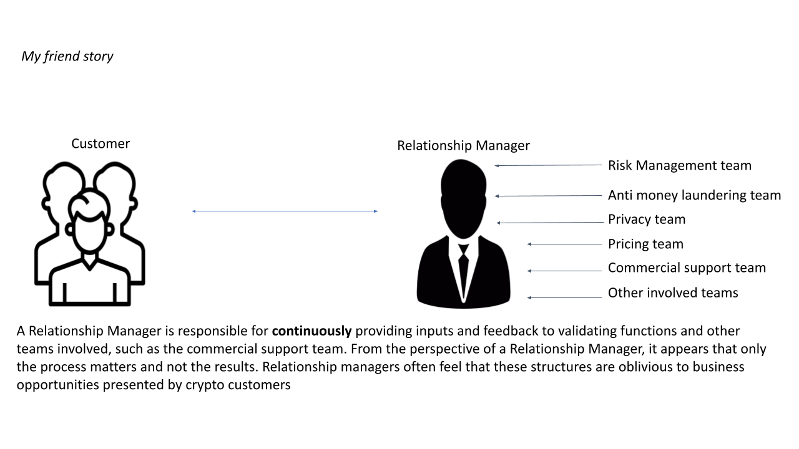
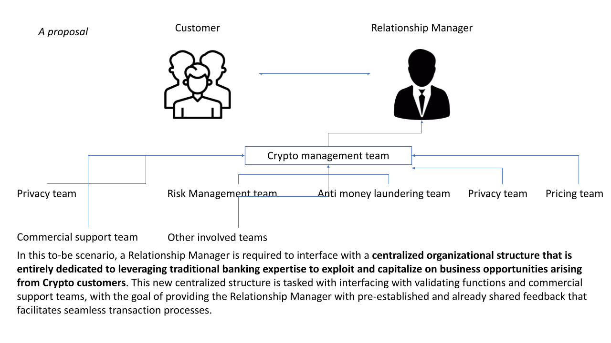

Managing Crypto Customers in Legacy Financial Institutions.#
Industry Perspective
Disclaimer: The views and opinions expressed in this article are solely those of the author
Key Insights
Legacy banks and financial institutions face internal and external challenges in integrating cryptocurrencies into their existing business framework for generating new revenue streams.
The internal perspective involves leveraging distributed ledger technology for an overall better management.
The external perspective focuses on managing crypto customers, including regulatory compliance and environmental sustainability.
Legacy banks often miss out on business opportunities due to constraints related to regulation, organization, processes, delivery, and employee biases.
Innovative central organizational structures should establish clear provisions, monitor key performance indicators, and develop product management strategies.
Offering tailored financial products, such as crypto mining equipment insurance and crypto hedging insurance, can enhance profitability and help diversifying revenue streams.
Talent acquisition and skill development are crucial to improve crypto risk management within legacy banks.
Additional expertise is required in advanced programming languages, an end-to-end vision of innovation, and product design.
By addressing these challenges, legacy financial institutions can embrace the potential of cryptocurrencies and stay ahead in the evolving financial landscape.
A Background Story#
Some months ago, a friend of mine working in the sales department of a major European bank told me about a chaotic experience he had with a potential client. The client was a cryptocurrency miner who had invested in a warehouse in Switzerland and filled it with state-of-the-art computers for mining. The business was thriving, and with the cryptocurrency boom, it was yielding good profits. However, some weather events, like a hailstorm, had caused heavy damage to his equipment.
The miner contacted my friend to inquire about insurance protection against such weather events. My friend saw the opportunity and approached the relevant departments in his bank, including bank insurance and product design. That’s where the story ended. My friend spent countless meetings and days explaining the basics to our colleagues: what a miner does, their work, and their business. Even escalations to top management were in vain. In the meantime, the miner found an alternative financial solution provided by a cutting-edge FinTech, and as a result, both he and his bank lost an outstanding prospective customer. Preventing this missed business opportunities from happening again in legacy banks is the subject of this article.
{kind=link}

Fig. 4 Functions of the Relationship Manager.#
Introduction#
Cryptocurrencies present unique challenges for legacy financial institutions from both internal and external viewpoints. Internally, these institutions must explore how to integrate cryptocurrencies and distributed ledger technologies into their existing systems, leveraging the technology to embrace a new era of financial management. This internal perspective significantly impacts processes and IT infrastructure and also has implications for costs and IT investments, from a financial statement standpoint.
Externally, the presence of institutional and retail cryptocurrency customers (e.g., cryptocurrency platforms or cryptocurrency holders) creates a conundrum. This demands meticulous attention to regulatory compliance, risk management, and product offerings within the existing framework, which aim to discover innovative revenue streams beyond traditional avenues. Indeed, from a financial statement perspective, this external view could have a significant impact on revenues, allowing a diversification strategy.
Internal Perspective
Legacy banks face the challenge of integrating cryptocurrencies into their traditional banking systems, which involves exploring ways to leverage blockchain technology, decentralization, and secure transactions. By effectively integrating these digital assets, legacy banks can tap into the potential of cryptocurrencies and offer innovative financial services to their customers.
Managing Crypto Customers#
Legacy banks encounter a unique set of challenges when engaging with crypto customers [Ban23a, Ban23b]. Relationship managers and salespeople must navigate the complexities of regulatory compliance, such as Anti-Money Laundering (AML) and Know Your Customer (KYC) regulations, to ensure adherence while facilitating a seamless customer experience. Additionally, concerns related to environmental sustainability and energy consumption associated with cryptocurrencies need to be addressed, providing clarity on the bank’s stance regarding these issues.
Legacy banks often miss out on business opportunities due to the interplay of regulatory, organizational, process, delivery, and employee bias constraints. To overcome these constraints and expand their business opportunities, legacy banks must adopt a proactive and reactive approach by focusing on setting up new central organizational structures within their general management organization. These new structures have responsibilities to provide clear provisions (both from credit risk and reputation risk management), Key Performance Indicators (KPIs), and product management strategies exclusively dedicated to managing cryptocurrencies and serving crypto customers.
By proactively tackling both internal and external challenges, legacy financial institutions can begin to adeptly navigate the rapidly shifting landscape of cryptocurrency. In this article, we delve into a variety of innovative strategies and approaches that could be harnessed to tap into the vast potential of cryptocurrencies. A profound paradigm shift, altering how legacy banks engage with and manage cryptocurrencies, is indeed a pressing necessity in today’s digital era.
Assessing Regulatory and Compliance Considerations#
Engaging with crypto customers entails navigating through stringent regulatory obligations, such as AML and KYC regulations. Relationship managers and salespersons must ensure effective compliance with these regulations while also addressing concerns regarding environmental sustainability, given the energy-intensive nature of certain cryptocurrencies.
Given that these professionals receive no support from other organizational structures within their banking or financial institution, the burden of responsibility rests squarely on their shoulders. The breadth of their tasks is considerable, presenting a complex landscape that must be navigated independently.
To illustrate this from an operational standpoint, these individuals must personally interpret and apply relevant legal constraints due to a lack of cryptocurrency regulatory knowledge amongst legal professionals in traditional banks. Beyond this, they must design and implement a profitable pricing strategy that gains management approval, a task often involving numerous meetings, complex analyses, and financial simulations.
Moreover, they must fulfill climate, anti-money laundering, and privacy assessments, which are lengthy, complex, and mandatory in the credit process [Uni18a]. All these activities are required to be performed simultaneously and swiftly to maintain a positive commercial relationship with customers, and analyze competitors’ actions. A chaotic, complex, and overwhelming task without help!
A more constructive approach has been lacking mainly due to the two major reasons:
Banks employees’ biases and a negative approach towards cryptos
Unclear regulation about cryptos.
On the latter, the EU has been working on regulating cryptocurrencies to address potential risks and ensure consumer protection. While there is no specific comprehensive regulation for crypto management in banks, the following regulations may be relevant:
MiCAR (Market in Crypto-Assets Regulation) [Com20].
Anti-Money Laundering Directive (AMLD) [Uni15].
Markets in Financial Instruments Directive (MiFID II) [Uni14].
EU General Data Protection Regulation (2016/679, “GDPR”) [Uni18b].
From the perspective of a middle-aged EU bank employee, these regulations fail to provide a clear and straightforward framework. Instead, they offer only basic principles and contribute to the overwhelming amount of documentation that banks must manage within the European Union. Essentially, this situation becomes a burden, leading to additional costs without generating any significant increase in revenue. We will explore some potential solutions to these problems next.
Expanding Business Opportunities#
Relationship managers and salespersons of legacy banks usually miss out on significant business opportunities due to the interplay of the regulatory, organizational, process, delivery, and employee biases constraints. To overcome these limitations, again, a paradigm shift is needed. Instead of treating crypto customers as a challenging prospect, the entire organization should embrace a proactive and reactive approach, which means setting up enabling factors for allowing the onboarding of crypto customers. These enabling factors entail creating central organizational structures within the bank that specialize in crypto management, encompassing risk management, AML, privacy, and product creation and offerings.
{kind=link}

Fig. 5 Alternative Scenario with Relationship Manager.#
Establishing Centralized Organizational Structures#
Central organizational structures dedicated to managing cryptocurrencies need to be set up from scratch because they can provide the necessary focus and guidance, encompassing both business and technical perspectives. These entities should establish clear provisions, mapping opportunities and risks, setting up and monitoring KPIs and product management strategies.
By assigning specific responsibilities and clearly structured activities, legacy banks can effectively identify and serve the right crypto customers, while ensuring compliance and risk mitigation and disregarding crypto customers that do not respect the bank provisions (e. g. crypto customers that do not have data privacy IT servers within a certain list of countries, or crypto customers that have some previous criminal records in terms of money laundering). Furthermore, offering tailored financial products, such as financing and insurance solutions, can enhance the profitability of the legacy institution. These bespoke products can be imagined only from employees who are engaged and motivated in the crypto world. Here are some examples of innovative crypto products that legacy banks could sell to crypto customers:
Crypto Mining Equipment Insurance: Develop insurance policies specifically designed to cover the risks associated with crypto mining equipment, such as physical risks (e.g., flood, hailstorm, theft, damage, or breakdown. This type of coverage would provide financial protection for miners who invest heavily in hardware
Crypto Hedging Insurance: Develop insurance policies specifically designed to cover the risks of extreme price volatility. This type of coverage would provide financial protection for crypto holders against price volatility
Operative Risks Insurance: Offer insurance policies that cover losses resulting from smart contract vulnerabilities, coding errors, fraudulent or failed transactions. This coverage could offer reimbursement for lost funds due to transaction errors, technical glitches, or fraudulent activities.
Talent Acquisition and Skill Development#
Overcoming biases and improving crypto risk management within legacy banks may require attracting talent from outside the financial industry. Re-skilling and up-skilling existing employees may not be sufficient; therefore, individuals with fresh perspectives and expertise, especially those from product design and development will be required. This transformation process should focus on developing a workforce with the necessary skills to navigate the complexities of cryptocurrencies and related financial services.
In the general context, and simplifying it to the utmost, within legacy banks there are now individuals who possess extensive expertise in accounting, credit risk and loan origination, as well as classical IT knowledge related to applications managing transactions and data. The skills that are lacking to integrate an active and proactive understanding of cryptocurrencies pertain to:
Advanced and cutting-edge programming languages
An eclectic and end-to-end vision of innovation (currently, innovation departments in legacy banks only focus on processes and costs rather than revenues and products)
Proficiency in designing new products that are completely different from the traditional ones.
Conclusion#
Legacy financial institutions must proactively address the challenges associated with managing crypto customers. By navigating regulatory considerations, expanding business opportunities, establishing central organizations, and attracting specialized talent, these institutions can unlock the potential of cryptocurrencies within their existing frameworks. Embracing this transformation will not only help overcome the constraints imposed by regulation and biases but will also position the institutions at the forefront of the evolving financial landscape.
References#
- Ban23a
European Central Bank. Crypto-assets: a new standard for banks. European Central Bank, 2023. URL: https://www.bankingsupervision.europa.eu/press/publications/newsletter/2023/html/ssm.nl230215_1.en.html.
- Ban23b
European Central Bank. Take-aways from the horizontal assessment of the survey on digital transformation and the use of fintech. European Central Bank, 2023. URL: https://www.bankingsupervision.europa.eu/ecb/pub/pdf/Takeaways_horizontal_assessment~de65261ad0.en.pdf.
- Com20
European Commission. Regulation of the european parliament and of the council. European Commission, 2020. URL: https://eur-lex.europa.eu/legal-content/EN/TXT/?uri=CELEX%3A52020PC0593.
- Uni14
European Union. Markets in financial instruments regulation (mifir). European Union, 2014. URL: https://eur-lex.europa.eu/EN/legal-content/summary/markets-in-financial-instruments-regulation-mifir.html.
- Uni15
European Union. Anti-money laundering directive. European Union, 2015. URL: https://eur-lex.europa.eu/legal-content/EN/TXT/?uri=celex:32015L0849.
- Uni18a
European Union. Directive of the european parliament. European Union, 2018. URL: https://eur-lex.europa.eu/legal-content/EN/TXT/PDF.
- Uni18b
European Union. General data protection regulation. European Union, 2018. URL: https://gdpr-info.eu.